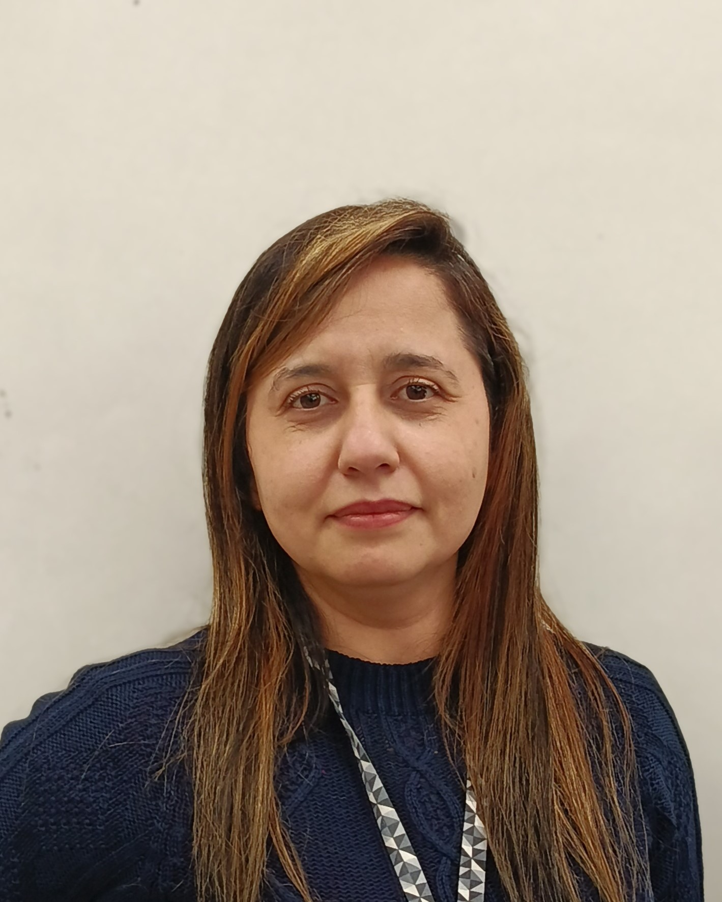

Flaviene Marins Pereira Vaz
Da Ciência à Inspiração de Vida: O Olhar Atento da Professora Flaviene
Com uma atuação multifacetada nas disciplinas de Química, Robótica e Empreendedorismo, a professora Flaviene Marins Pereira Vaz traz para a sala de aula uma bagagem profissional rica e marcada pela constante busca por aprendizado.
Natural de Belo Horizonte, Flaviene atuou por mais de uma década na capital mineira em pré-vestibulares, instituições de ensino médio e escolas preparatórias. Mais tarde, viveu a experiência de se mudar para São Paulo, ministrando aulas particulares por sete anos até fixar residência em Jundiaí e passar a fazer parte do corpo docente do SESI.
Essa mudança de cidades e estados foi um dos maiores desafios de sua carreira, mas também um processo transformador. Chegou a considerar uma transição de área, mas percebeu que sua vocação para a sala de aula falava mais alto.
"A educação é a base de tudo. Se eu puder refletir e pensar que, de uma certa maneira, a gente pode estar influenciando de forma positiva os alunos, isso já é um ganho. Por isso o professor tem que ser muito consciente naquilo que fala e no modo de tratar", destaca.
Sua maior recompensa profissional é acompanhar a evolução dos antigos estudantes, vendo ex-alunos conquistando espaço como médicos, advogados ou empreendedores. Como inspirações femininas, busca referências na história e na espiritualidade: Maria Leopoldina, Maria Quitéria e Santa Teresinha.
Para Flaviene, lecionar vai além de transmitir fórmulas químicas ou teorias de empreendedorismo — é um exercício constante de ser um exemplo correto e uma inspiração humana para os alunos.